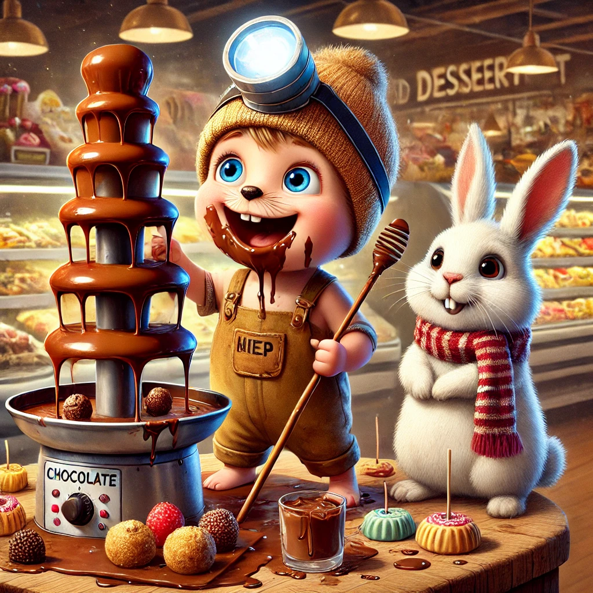

Es war einmal ein Wiesel namens Winnie, das oben auf dem Knabbereienregal eines Supermarkts in Leknes auf den Lofoten wohnte. Winnies Supermarkt war nicht irgendein Supermarkt. Winnies Supermarkt hatte alles wovon man träumen kann. Bevor Winnie hiwr einzog, hatte sie noch zwei andere Supermärkte testgewohnt. Keiner hatte ihr so gut gefallen, wie dieser. Der Grund dafür war hauptsächlich in der Dessertabteilung zu finden. Ja, richtig. Eine Abteilung nur mit Desserts: gebacken, geschichtet, gekühlt, gefroren, köstlich dampfend - eine Abteilung nur für den schönsten Teil eines Menüs.
Das Highlight dieser Abteilung war ein riesiger Schockladenbrunnen, umringt von allerlei Köstlichkeiten, die man auf einen Holzspieß stecken und in das flüssige braune Gold halten konnte. Winnies Routine enthielt natürlich keinen Holzspieß. Sie steckte die ganze Pfote hinein, denn dann hatte später den Heidenspaß diese wieder sauber zu lecken.
Winnie hatte mal wieder beschlossen, dem Hauptgang)bestehend aus zwei Tüten Chips) ein klebriges Schokoladenereignis folgen zu lassen, als sie tief enttäuscht wurde: der Brunnen summt zwar und gab sich allen Anscheins nach viel Mühe, die Kakaomasse fließen zu lassen, aber trotzdem trat kein Tropfen hervor.
Schnell berief sie eine Beratungsrunde mit Biep und Herrn Hase ein, denn eins war klar: das musste sofort behoben werden. Biep, der viel technisches Verständnis besaß, diagnostizierte sofort eine verstopfte Leitung: "Da hat sicher jemand einen Marshmallow in die Schokolade fallen lassen und jetzt kann der Brunnen nicht mehr pumpen." Er war so überzeugend, dass die anderen nickten. Doch wie könnten sie einen solchen frechen Marshmallow aus der Leitung angeln? Biep, der kleinste von ihnen, erkläre sich bereit, hinein zu tauchen. Sie bastelten ihm einen Taucheranzug aus einem Gummihandschuhe und eine Armenhilfe aus einem Strohhalm.
Mutig watete Biep erst bis zur Hüfte in die Schokolade und nahm erstmal einen Geschmacks- und Temperaturtest: "Schmeckt lecker und ist nicht mehr zu heiß", war sein Urteil und - schlurpf - war er abgetaucht. Für wenige Minuten könnten Winnie und Herr Hase nur den kleinen Schnorchel sehen und sie wollten gerade anfangen, sich Sorgen zu machen, als plötzlich flüssige Schokolade aus dem Brunnen zu plätschern begann und Biep völlig mit Schokolade überzogen und einer großen Traube aus dem Becken auftauchte.
Er zog sich den Handschuhe vom Kopf, lachte laut auf uns biss beherzt in die Traube: "Ja, Winnie, du hast Recht. Das ist so lecker, das musste unbedingt gelöst werden!" Alle drei lachten und griffen zu.